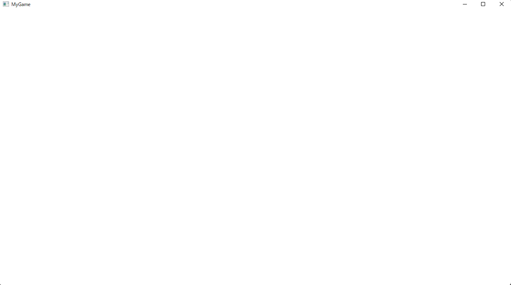
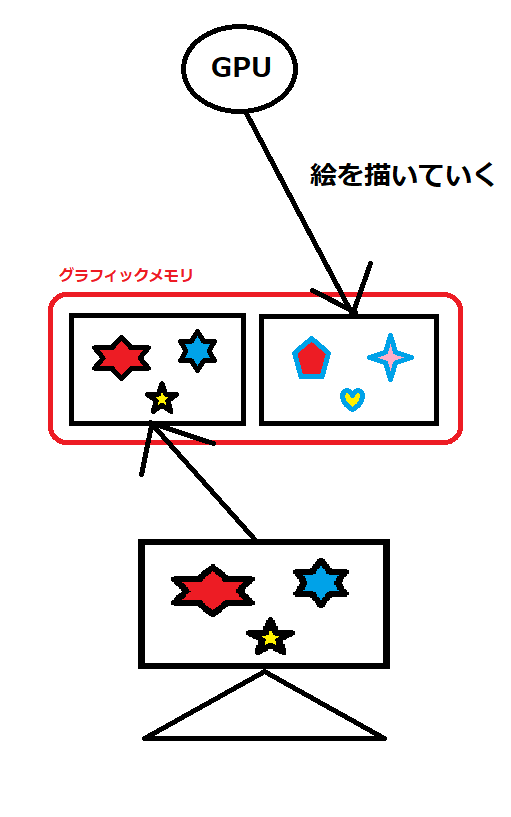
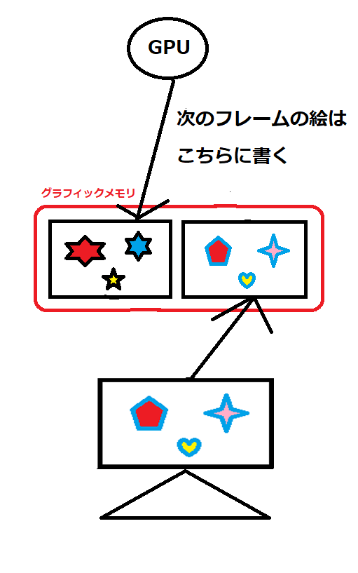

このチャプターではDirectX12を扱う前に、WindowsSDKを利用して、ゲームの絵を表示するためのウィンドウを表示、制御する方法について見ていきます。
ウィンドウズ上で動作するゲームを作成するためには、まずウィンドウを作成する必要があります。このウィンドウを作成するAPIを提供しているのはDirectXではなく、WindowsSDKというソフトウェア開発キットになります。WindowsSDKは様々なAPIを含んでおり、その中にCreateWindow()関数、RgisterClassEX()関数、ShowWindos()関数など、ウィンドウアプリを作成するための様々なAPIがあります。実はDirectXもWindowsSDKの中に含まれているAPI群なのです。WindowsSDKを利用することによって、WindowsOS上で動作するグラフィカルなツールやゲームといったアプリを作ることができます。 DirectX、正確にはDirectXの中のDirect3Dは3Dグラフィックスを扱うためのAPI群となっています。ゲームではDirect3Dを使って、リアルタイム3DCGの絵を作成して、その絵を作成したウインドウに表示しているわけです。
では、まずはウィンドウの作成に関する処理を見ていきましょう。ウィンドウを作成するステップは下記のようになります。
では、各ステップ詳細に見ていきましょう。
ウィンドウクラスとは作成するウィンドウの基本データとなります。ウィンドウの作成は後述するCreateWindow()関数を利用するのですが、この時にどのウィンドウクラス情報を使うのか？といった指定をすることになります。 ウィンドウの基本データの設定はWNDCLASSEXという構造体を利用します。基本データを設定することができたら、RegisterClassEx()関数を利用して、ウィンドウクラスを登録します。ウィンドウクラスのデータは使用するアイコン、マウスカーソル、ウィンドウの背景色などのデータを設定します。次のコードはウィンドウクラスの登録の疑似コードです。
// ウィンドウクラスのパラメータを設定(単なる構造体の変数の初期化です。)
WNDCLASSEX wc =
{
sizeof(WNDCLASSEX), // 構造体のサイズ。
CS_CLASSDC, // ウィンドウのスタイル。
MsgProc, // 【重要】メッセージプロシージャ(後述)
0, // ウインドウクラス構造体の後ろに割り当てる補足バイト数。多くの場合で0でよい。
0, // ウインドウインスタンスの後ろに割り当てる補足バイト数。多くの場合で0でよい。
GetModuleHandle(nullptr), // このクラスのためのウインドウプロシージャがあるインスタンスハンドル。
nullptr, // アイコンのハンドル。NULLの場合はデフォルト。
nullptr, // マウスカーソルのハンドル。NULLの場合はデフォルト。
nullptr, // ウィンドウの背景色。NULLの場合はデフォルト。
nullptr, // メニュー名。NULLだとメニューなし。
L"MyGame", // ウィンドウクラスに付ける名前。
nullptr // 16×16の小さいサイズのアイコン。
};
// ウィンドウクラスの登録。
RegisterClassEx(&wc);
さて、このデータの中で特に注目してほしいのが、メッセージプロシージャです。メッセージプロシージャは後ほど詳しく説明しますが、ゲーム以外のWindowsアプリを作る場合、特にGUIプログラミングを行う場合は心臓部分になるものとなります。
ウィンドウクラスの登録ができたら、CreateWindow()関数を利用して、ウィンドウを作成します。ウィンドウを作成する際に、どの名前を使って、どのウィンドウクラスを利用するのかを指定します。イメージとしてはウィンドウクラスがtkmファイル、ウィンドウがModelクラスのインスタンスといった感じです。次のコードはウィンドウを作成する疑似コードです。
// ウィンドウの作成
HWND hwnd = CreateWindow(
L"MyGame", // 使用するウィンドウクラスの名前。
L"MyGame_00", // ウィンドウの名前。
WS_OVERLAPPEDWINDOW, // ウィンドウスタイル。
0, // ウィンドウの初期X座標。
0, // ウィンドウの初期Y座標。
1280, // ウィンドウの幅。
720, // ウィンドウの高さ。
nullptr, // 親ウィンドウのハンドル。
nullptr, // メニューハンドル。
hInstance, // アプリケーションのインスタンス。
nullptr, // WM_CREATEメッセージのlParamパラメータとして渡される引数。
);
CreateWindow()関数はウィンドウを識別するためのウィンドウハンドルを返してきます。ウィンドウハンドルというのは、ウィンドウを識別するためのハンドルです。マルチウィンドウのアプリケーションの場合、このウィンドウハンドルを利用してウィンドウを識別します。
CreateWindow()関数を利用するとHWND型のウインドウハンドルが返ってくることを学びました。ウィンドウハンドルというのはウィンドウを識別するために使用されると記述しましたが、ではどのように識別するのでしょうか？答えはアドレスで識別します。実はHWND型は次のコードのように、ただのHWND__という構造体のポインタ型の別名定義です。
// HWND__という構造体を定義する。
struct HWND__ {
int unused;
};
// HWND__*を別名定義。
typedef struct HWND__* HWND;
私は昔C言語を学び始めて数か月ほどでウィンドウハンドルに出会い混乱した覚えがありますが、ようはCreateWindow()関数は作成したウィンドウを表すオブジェクトのアドレスを返してきているだけです。そのアドレスを利用して、ウィンドウを識別するわけです。
ウィンドウの表示はShowWindw()関数を利用します。ShowWindow()関数に表示したいウィンドウハンドルを渡すことでウィンドウを表示することができます。次のコードはウィンドウを表示する疑似コードです。
// 作成したウィンドウを表示状態にする。
ShowWindow( hwnd, nCmdShow );
1.2節でウィンドウを作成して表示する処理について勉強しました。この処理はいわゆる初期化処理と呼ばれるものです。ウィンドウを作成することができたら、ユーザーのアクションに対して様々な反応を返す必要があります。例えば「✕ボタンを押されたらウィンドウを終了させる」や、「マウスの右クリックでポップアップメニューを出す」などです。このユーザーの反応に対するアクションはメッセージループと呼ばれるループ内に記述されます。イメージとしてはゲームループに近いです。実際ゲームでは、このメッセージループの一部がゲームループとなります。メッセージループの中でユーザーからのメッセージが処理されて、後述するメッセージプロシージャという関数が呼び出されることになります。次のコードはメッセージループの疑似コードです。
// step-2 メッセージループを実装する。
MSG msg = { 0 };
// 終了メッセージが送られてくるまでループを回す。
while (WM_QUIT != msg.message) {
// PeekMessage()関数を利用してウィンドウからのメッセージを受け取る。
if (PeekMessage(&msg, NULL, 0, 0, PM_REMOVE))
{
// 仮想キーメッセージを文字メッセージに変換する。
// ユーザーからの文字入力を取得する必要がある場合は、本関数を呼び出す。
TranslateMessage(&msg);
// メッセージを処理する。
// この関数の中でウィドウクラスで指定したメッセージプロシージャー関数が呼ばれる。
DispatchMessage(&msg);
}
}
このメッセージループではPeekMessage()関数、TranslateMessage()関数、DispatchMessage()関数の３つの関数が利用されています。PeekMessage()関数はユーザーが行った操作をメッセージという形で取り出します。例えば、マウスを動かした、右クリックした、左クリックしたといった情報です。取得したメッセージは第一引数のMSG構造体の変数に格納されます。TranslateMessage()関数はユーザーからの文字入力を処理する必要がある場合に呼び出します。仮想キーメッセージとなっているデータを扱いやすい文字データに変換してくれます。最後にDispatchMessage()関数ですが、この関数の中でウィンドウクラスの作成時に指定したメッセージプロシージャ関数が呼ばれます。
では、最後にメッセージプロシージャについて見ていきます。メッセージプロシージャとはユーザーからの入力を処理する関数です。ユーザーの操作に対しての反応はアプリによって違います。例えば、マウスの右クリックの場合、ポップアップメニューを表示するアプリもあれば、表示しないアプリもあります。このように、ユーザーの操作に対してのアクションはアプリによって異なるため、そのアクションをプログラミングする必要があります。このプログラムの窓口となるのがメッセージプロシージャです。下記のコードはマウスの左クリックのメッセージが来た時に、メッセージボックスを表示するメッセージプロシージャの疑似コードです。
LRESULT CALLBACK MsgProc(HWND hWnd, UINT msg, WPARAM wParam, LPARAM lParam)
{
//送られてきたメッセージで処理を分岐させる。
switch (msg)
{
case WM_LBUTTONDOWN:
// マウスの左ボタンが押された。
MessageBox(hWnd, L"マウスの左ボタンが押された!", L"通知", MB_OK);
break;
default:
// それ以外はデフォルトの処理に飛ばす。
return DefWindowProc(hWnd, msg, wParam, lParam);
}
return 0;
}
ではSample_01_01を使って、ウィンドウを表示するプログラムを実装していきましょう。Sample_01_01/Game/Game.slnを立ち上げてください。
まずはウィンドウの初期化です。ウィンドウを初期化する流れはウィンドウクラスの登録、ウィンドウの作成、ウィンドウの表示でした。その流れを思い出しながら、main.cppにリスト1.1のプログラムを入力してください。
[リスト1.1 main.cpp]
// step-1 ウィンドウの初期化
// ウィンドウクラスのパラメータを設定(単なる構造体の変数の初期化です。)
WNDCLASSEX wc =
{
sizeof(WNDCLASSEX), // 構造体のサイズ。
CS_CLASSDC, // ウィンドウのスタイル。
// ここの指定でスクロールバーをつけたりできるが、ゲームではほぼ不要なのでCS_CLASSDCでよい。
MsgProc, // メッセージプロシージャ。
0, // 0でいい。
0, // 0でいい。
GetModuleHandle(nullptr), // このクラスのためのウインドウプロシージャがあるインスタンスハンドル。
// 何も気にしなくてよい。
nullptr, // アイコンのハンドル。今回はnullptrでいい。
nullptr, // マウスカーソルのハンドル。今回はnullptrでいい。
nullptr, // ウィンドウの背景色。今回はnullptrでいい。
nullptr, // メニュー名。今回はnullptrでいい。
L"MyGame", // ウィンドウクラスに付ける名前。
nullptr // NULLでいい。
};
// ウィンドウクラスの登録。
RegisterClassEx(&wc);
// ウィンドウの作成
HWND hwnd = CreateWindow(
L"MyGame", // 使用するウィンドウクラスの名前。
// 先ほど作成したウィンドウクラスと同じ名前にする。
L"MyGame", // ウィンドウの名前。ウィンドウクラスの名前と別名でもよい。
WS_OVERLAPPEDWINDOW, // ウィンドウスタイル。ゲームでは基本的にWS_OVERLAPPEDWINDOWでいい、
0, // ウィンドウの初期X座標。
0, // ウィンドウの初期Y座標。
1280, // ウィンドウの幅。
720, // ウィンドウの高さ。
nullptr, // 親ウィンドウ。今回はnullptrでいい。
nullptr, // メニュー。今回はnullptrでいい。
hInstance, // アプリケーションのインスタンス。
nullptr // WM_CREATEメッセージのlParamパラメータとして渡される引数。
);
// 作成したウィンドウを表示状態にする。
ShowWindow( hwnd, nCmdShow );
さて、入力してもらうとわかると思いますが、多くのパラメータにnullptrが指定されています。このテキストではこれらのパラメータについて多くは説明しませんが、ゲームであればこれらのパラメータは多くの場合でnullptrで十分です。もちろんこれらのパラメーターを利用するゲームもあると思いますが、必要になった時に調べるで十分です(ゲームのアイコンなどは売り物のゲームを作るのであれば変更する必要がありますね)。
続いて、メッセージループの実装です。main.cppの該当するコメントの箇所にリスト1.2のプログラムを入力してください。 [リスト1.2 main.cpp]
// step-2 メッセージループを実装する。
MSG msg = { 0 };
// 終了メッセージが送られてくるまでループを回す。
while (WM_QUIT != msg.message) {
// PeekMessage()関数を利用してウィンドウからのメッセージを受け取る。
if (PeekMessage(&msg, NULL, 0, 0, PM_REMOVE))
{
// 仮想キーメッセージを文字メッセージに変換する。
// ユーザーからの文字入力を取得する必要がある場合は、本関数を呼び出す。
TranslateMessage(&msg);
// メッセージを処理する。
// この関数の中でウィドウクラスで指定したメッセージプロシージャー関数が呼ばれる。
DispatchMessage(&msg);
}
}
最後にメッセージプロシージャを実装しましょう。main.cppにリスト1.3のプログラムを入力してください。
[リスト1.3 main.cpp]
// step-3 メッセージプロシージャを実装する。
LRESULT CALLBACK MsgProc(HWND hWnd, UINT msg, WPARAM wParam, LPARAM lParam)
{
//送られてきたメッセージで処理を分岐させる。
switch (msg)
{
case WM_LBUTTONDOWN:
// マウスの左ボタンが押された。
MessageBox(hWnd, L"マウスの左ボタンが押された!", L"通知", MB_OK);
break;
case WM_DESTROY:
// 削除メッセージが来たので終了させる。
PostQuitMessage(0);
break;
default:
// それ以外はデフォルトの処理に飛ばす。
return DefWindowProc(hWnd, msg, wParam, lParam);
}
return 0;
}
このメッセージプロシージャではWM_LBUTTONDOWN(マウスの左ボタンが押された)とWM_DESTROY(終了メッセージ)メッセージを処理しています。WM_DESTROYメッセージはアプリの✕ボタンを押すなど、ユーザーがアプリを終了させる操作を行ったときに送られてくるメッセージです。今回のプログラムでは、WM_DESTROYメッセージを受け取ると、PostQuitMessage()関数を利用して、WM_QUITメッセージをメッセージキューにポストしています。このメッセージがポストされることで、リスト1.2のメッセージループを抜けることができるようになります。WM_LBUTTONDOWNとWM_DESTROYメッセージ以外はデフォルトのウィンドウメッセージ処理を行ってくれるDefWindowProc()関数を呼び出ししています。入力出来たら実行してみてください。図1.1のような何も表示されていないウィンドウが表示されたら成功です。
[図1.1] 
下記のURLの評価テストを実施しなさい。 評価テスト
このChapterではDirectXの初期化～ゲームループでの毎フレームの処理を見ていきます。
では、まずそもそもDirectXとはいったい何なのか見ていきましょう。DirectXとはマイクロソフトが開発したゲーム・マルチメディア処理用のAPI群です。これまでは主に3DCGを扱うDirect3Dを勉強してきましたが、それ以外にも次のようなAPIがあります。
| 名称 | 説明 |
|---|---|
| DirectX Graphics Infrastructure | Direct3D 10以降のグラフィックス基盤API。デバイスとの通信など、ローレベルタスクを担当する。 |
| Direct2D | Windows 7以降で利用可能な、新しい2次元グラフィックスAPI。バージョン1.0はWindows Vistaにもバックポートされた。 |
| DirectWrite | Windows 7以降で利用可能な、新しい高品位テキスト描画API。バージョン1.0はWindows Vistaにもバックポートされた。 |
| XAudio2 | クロスプラットフォーム (WindowsとXbox) で共通に使える低レベルオーディオAPI |
| X3DAudio | WindowsとXboxの両方のプラットフォーム上で利用可能な、空間音響用ヘルパーライブラリ |
| DirectAnimation | 2D Webアニメーション用 |
| DirectX Media Objects | エンコーダー、デコーダー、エフェクトといったストリーミングオブジェクトのサポート。 |
| Direct Storage | ゲームローディング（読み込み）の高速化。 |
DirectXの進化の歴史の大半はDirect3Dになるのですが、実はこのように様々なAPIが存在しています。このテキストでは主にDirect3Dを扱いますが、グラフィックカードなどのデバイスと通信を行うために、DirectX Graphics Infrastructure(DXGI)なども利用します。このテキストでは扱いませんが、本校のゲームエンジンではサウンドの再生にXAudio2とX3DAudioを利用しています。
では、まずはD3Dデバイスの初期化について見ていきましょう。D3DデバイスとはCPU側からGPUにアクセスするためのインターフェースです。D3Dデバイスを作成することによって、C++側からGPUに対して様々な命令を行うことができるようになります。D3DデバイスはDirect3DのD3D12CreateDevice()関数を利用することで作成することができます。リスト2.1はD3Dデバイスを作成するサンプルコードです。
[リスト2.1]
ID3D12Device5* d3dDevice = nullptr;
D3D12CreateDevice(
nullptr, // 使用するGPUのアダプタ。
D3D_FEATURE_LEVEL_12_1, // DirectX12のバージョン。
IID_PPV_ARGS(&d3dDevice) // D3Dデバイスにアクセスするインターフェース。
);
D3Dデバイスへの通信はID3D12Device*に格納されたD3Dデバイスオブジェクトのアドレスに参照して行います。ID3D12Deviceインターフェースは複数のバージョンがあり、使用する機能に応じて適切なインターフェースを使用する必要があります。疑似コードではID3D12Device5を利用しています。 D3D12CreateDevice()関数の第一引数は使用するGPUのアダプタとなっています。nullptrが指定されると、デフォルトのGPUが利用されます。複数のGPUが載っているパソコン、例えばゲーミングノートパソコンであれば、Intel製のGPUとNVIDIA製のGPUが乗っている場合があったりします。そのような時に、nullptrを指定しているIntel製のGPUが使われるか、NVIDIA製のGPUが使われるかは、パソコンの設定次第となります(図2.1)。
[図2.1 優先使用されるGPUの設定]
このような設定の影響を受けずに、使用するGPUを指定したい場合、例えばNVIDIAのGPUが載っている場合はそれを優先したいなどには、DXGIを使って、パソコンに載っているGPUアダプタを列挙して、使いたいアダプタを指定するということもできます。リスト2.2のコードは、NVIDIA製のアダプタを最優先で使用している疑似コードです。興味がある方は参照してみてください。 [リスト2.2]
enum GPU_Vender {
GPU_VenderNvidia, //NVIDIA
GPU_VenderAMD, //AMD
GPU_VenderIntel, //Intel
Num_GPUVender,
};
ComPtr<IDXGIAdapter> adapterTmp = nullptr;
// 各ベンダーのアダプターを記憶する配列。
ComPtr<IDXGIAdapter> adapterVender[Num_GPUVender] = { nullptr };
// 最終的に使用するアダプタ。
ComPtr<IDXGIAdapter> useAdapter = nullptr;
SIZE_T videoMemorySize = 0;
// IDXGIFactory::EnumAdapters()関数を利用して、接続されているGPUアダプタを列挙していく。
for (int i = 0; dxgiFactory->EnumAdapters(i, &adapterTmp) != DXGI_ERROR_NOT_FOUND; i++) {
// IDXGIAdapter::GetDesc()関数を利用してアダプタ情報を取得。
DXGI_ADAPTER_DESC desc;
adapterTmp->GetDesc(&desc);
if (wcsstr(desc.Description, L"NVIDIA") != nullptr) {
// NVIDIA製
adapterVender[GPU_VenderNvidia] = adapterTmp;
}
else if (wcsstr(desc.Description, L"AMD") != nullptr) {
// AMD製
adapterVender[GPU_VenderAMD] = adapterTmp;
}
else if (wcsstr(desc.Description, L"Intel") != nullptr) {
// Intel製
adapterVender[GPU_VenderIntel] = adapterTmp;
}
}
// 使用するアダプターを決める。
if (adapterVender[GPU_VenderNvidia] != nullptr) {
// NVIDIA製が最優先
useAdapter = adapterVender[GPU_VenderNvidia];
}
else if (adapterVender[GPU_VenderAMD] != nullptr) {
// 次はAMDが優先。
useAdapter = adapterVender[GPU_VenderAMD];
}
else {
// NVIDIAとAMDのGPUがなければビデオメモリが一番多いやつを使う。
useAdapter = adapterMaxVideoMemory;
}
// D3Dデバイスを作成。
D3D12CreateDevice(
useAdapter,
D3D_FEATURE_LEVEL_12_1,
IID_PPV_ARGS(&m_d3dDevice)
);
続いて、描画コマンドの生成と描画キックについて見ていきます。「コマンド」というのは「命令」という意味で、描画コマンドというのは絵を描くための命令という意味になります。描画キックというのはその命令をGPUに送るということです。リアルタイムCGの絵を表示するための、CPUの仕事というのは、毎フレーム描画コマンドを作成して、その命令をキックしてGPUに送るということになります。リスト2.3のコードは描画コマンドを作成してキックしいる疑似コードです。
[リスト2.3]
unsigned int commands[100];
commands[0] = 10; // 10は頂点バッファをセット。
commands[1] = 0x1234; // 頂点バッファのアドレス。
commands[2] = 20; // 20はインデックスバッファをセット。
commands[3] = 0x2345; // インデックスバッファのアドレス。
commands[4] = 100; // 100は描画キック
commands[5] = -1; // コマンドの終わりを表す番兵
// GPUに命令を送る。
Kick( commands );
このコードはあくまで疑似コードですので、これで実際にGPUに命令が送られているわけではないので注意してください。しかし、このコードはC++側で行っている描画コマンドの作成の処理を非常にシンプルに表しているものです。これから描画コマンドを生成するための複雑なプログラムを見ていきますが、本質的には疑似コードのような処理をしていると考えてください。 DirectX12で描画コマンドの生成とキックを行うためには、次の３つのコンポーネントを生成して利用する必要があります。
コマンドアロケーターはコマンドを記憶するためのメモリ領域を確保するために使われるものです。コマンドアロケータによって確保されたメモリ上にコマンドが記憶されていきます。リスト2.4のコードはコマンドアロケーターの疑似コードです。 [リスト2.4]
int currentCommandPos = 0;
char commandAllocator[10*1024];
void* AllocCommand( int size )
{
// 書き込み可能なアドレスを取得。
void* mem = &commandAllocator[currentCommandPos];
// 確保されたサイズ分だけ書き込み可能な位置を動かす。
currentCommandPos += size;
// 書き込み可能アドレスを返す。
return mem;
}
int main()
{
// 描画コマンドの先頭アドレス。
void* commandTopAddres = commandAllocator;
// コマンドを書き込む
// 頂点バッファを設定する。
// 頂点バッファの設定は8バイト使う。
int* newCommand = (int*)AllocCommand( 8 );
newCommand[0] = 10; // 10が頂点バッファを設定する命令(4バイト)
newCommand[1] = 0x1234; // 頂点バッファのアドレス(4バイト)
// インデックスバッファを設定する。
// インデックスバッファの設定は8バイト使う。
newCommand = (int*)AllocCommand( 8 );
newCommand[0] = 20; // 20がインデックスバッファを設定する命令(4バイト)
newCommand[1] = 0x2345; // インデックスバッファのアドレス(4バイト)
// ドローコール
// ドローコールの設定は4バイト使う。
newCommand = (int*)AllocCommand( 4 );
newCommand[0] = 100; // 100がドローコールの命令(4バイト)
// 最後にコマンドの終了の番兵を設定する。
newCommand = (int*)AllocCommand( 4 );
newCommand[0] = -1; // -1が番兵
// 生成されたコマンドをキック
Kick(commandTopAddres);
}
リスト2.3のコードと比べると複雑になってきましたが、本質的には2.3のコードと同じです。コマンドアロケータを使って、コマンドの書き込み先のメモリを確保して、そこにコマンドを書き込んでいっているだけです。
続いてコマンドリストです。コマンドリストは作成されたコマンドのアドレスを記憶していくリストです。リスト2.4のコードはコマンドリストを利用している疑似コードです。 [リスト2.4]
// これがコマンドリスト。コマンドのアドレスを記憶していく。
std::list<void*> commandList;
int currentCommandPos = 0;
char commandAllocator[10*1024];
void* AllocCommand( int size )
{
// 書き込み可能なアドレスを取得。
void* mem = &commandAllocator[currentCommandPos];
// 確保されたサイズ分だけ書き込み可能な位置を動かす。
currentCommandPos += size;
// 書き込み可能アドレスを返す。
return mem;
}
int main()
{
// 描画コマンドの先頭アドレス。
void* commandTopAddres = commandAllocator;
// コマンドを書き込む
// 頂点バッファを設定する。
int* newCommand = (int*)AllocCommand( 8 );
newCommand[0] = 10; // 10が頂点バッファを設定する命令(4バイト)
newCommand[1] = 0x1234; // 頂点バッファのアドレス(4バイト)
// 【注目】コマンドリストに追加
commandList.push_back(newCommand);
// インデックスバッファを設定する。
// インデックスバッファの設定は8バイト使う。
newCommand = (int*)AllocCommand( 8 );
newCommand[0] = 20; // 20がインデックスバッファを設定する命令(4バイト)
newCommand[1] = 0x2345; // インデックスバッファのアドレス(4バイト)
// 【注目】コマンドリストに追加
commandList.push_back(newCommand);
// ドローコール
// ドローコールの設定は4バイト使う。
newCommand = (int*)AllocCommand( 4 );
newCommand[0] = 100; // 100がドローコールの命令(4バイト)
// 【注目】コマンドリストに追加
commandList.push_back(newCommand);
// 最後にコマンドの終了の番兵を設定する。
newCommand = (int*)AllocCommand( 4 );
newCommand[0] = -1; // -1が番兵
// 【注目】コマンドリストに追加
commandList.push_back(newCommand);
// 生成されたコマンドをキック
Kick(commandList);
}
最後はコマンドキューです。コマンドキューはFIFO(先入れ先だし)のデータ構造になっており、複数のコマンドリストをリストをキューに詰むことができます。DirectX12では最終的に、このコマンドキューにコマンドリストを積んで、GPUにコマンドを送ります。リスト2.5のコードはコマンドキューの疑似コードです。
[リスト2.5]
// これがコマンドキュー。
std::queue<std::list<void*>> commandQueue;
// コマンドリスト。
std::list<void*> commandList;
// コマンドアロケータ。
int currentCommandPos = 0;
char commandAllocator[10*1024];
void* AllocCommand( int size )
{
// 書き込み可能なアドレスを取得。
void* mem = &commandAllocator[currentCommandPos];
// 確保されたサイズ分だけ書き込み可能な位置を動かす。
currentCommandPos += size;
// 書き込み可能アドレスを返す。
return mem;
}
int main()
{
// 描画コマンドの先頭アドレス。
void* commandTopAddres = commandAllocator;
// コマンドを書き込む
// 頂点バッファを設定する。
int* newCommand = (int*)AllocCommand( 8 );
newCommand[0] = 10; // 10が頂点バッファを設定する命令(4バイト)
newCommand[1] = 0x1234; // 頂点バッファのアドレス(4バイト)
// コマンドリストに追加
commandList.push_back(newCommand);
// インデックスバッファを設定する。
// インデックスバッファの設定は8バイト使う。
newCommand = (int*)AllocCommand( 8 );
newCommand[0] = 20; // 20がインデックスバッファを設定する命令(4バイト)
newCommand[1] = 0x2345; // インデックスバッファのアドレス(4バイト)
// コマンドリストに追加
commandList.push_back(newCommand);
// ドローコール
// ドローコールの設定は4バイト使う。
newCommand = (int*)AllocCommand( 4 );
newCommand[0] = 100; // 100がドローコールの命令(4バイト)
// コマンドリストに追加
commandList.push_back(newCommand);
// 最後にコマンドの終了の番兵を設定する。
newCommand = (int*)AllocCommand( 4 );
newCommand[0] = -1; // -1が番兵
// コマンドリストに追加
commandList.push_back(newCommand);
// 【注目】コマンドリストをキューに入れる。
commandQueue.push( commandList );
// 生成されたコマンドをキック
Kick(commandQueue);
}
ここまでの一連の流れがDirectX12に置けるコマンド生成です。コマンドアロケータでコマンドを記憶する領域を確保して、そこにコマンドを書き込む。そのコマンドアドレスをコマンドリストに登録して、最終的にはコマンドリストをコマンドキューに詰んでGPUにコマンドを発行します。リスト2.6は実際にDirectX12を利用して際のコマンドアロケータ、コマンドリスト、コマンドキューを初期化しているサンプルコードです。
[リスト2.6]
// D3Dデバイスを介してコマンドアロケータの作成する。
ID3D12CommandAllocator* commandAllocator = nullptr;
d3dDevice->CreateCommandAllocator(
D3D12_COMMAND_LIST_TYPE_DIRECT,
IID_PPV_ARGS(&commandAllocator));
// D3Dデバイスを介してコマンドリストを作成する。
ID3D12GraphicsCommandList4* commandList = nullptr;
d3dDevice->CreateCommandList(
0,
D3D12_COMMAND_LIST_TYPE_DIRECT,
commandAllocator),
nullptr,
IID_PPV_ARGS(&commandList)
);
// D3Dデバイスを介してコマンドキューを作成する。
D3D12_COMMAND_QUEUE_DESC queueDesc = {};
queueDesc.Flags = D3D12_COMMAND_QUEUE_FLAG_NONE;
queueDesc.Type = D3D12_COMMAND_LIST_TYPE_DIRECT;
ID3D12CommandQueue commandQueue = nullptr;
d3dDevice->CreateCommandQueue(
&queueDesc,
IID_PPV_ARGS(&commandQueue)
);
// ゲームループ
while(true){
// コマンドアロケータとコマンドリストをリセットする。
commandAllocator->Reset();
commandList->Reset(
commandAllocator, // 使用するコマンドアロケータを指定する。
nullptr
);
// ここから描画コマンドをコマンドリストに詰んでいく。
// キャラの頂点バッファを設定
commandList->IASetVertexBuffers( 0, 1, charaVertexBuffer );
// キャラのインデックスバッファを設定
commandList->IASetIndexBuffer( charaIndexBuffer );
// キャラをドローする。
commandList->DrawIndexedInstanced( charaIndexCount, 1, 0, 0, 0 );
// 背景の頂点バッファを設定
commandList->IASetVertexBuffers( 0, 1, bgVertexBuffer );
// 背景のインデックスバッファを設定
commandList->IASetIndexBuffer( bgIndexBuffer );
// 背景をドローする。
commandList->DrawIndexedInstanced( bgIndexCount, 1, 0, 0, 0 );
// コマンドリストをクローズする(番兵)。
commandList->Close();
// コマンドキューに詰むためにコマンドリストの配列を定義する。
ID3D12CommandList* commandListArray[] = {
commandList
};
// コマンドキューにコマンドリストを詰む。
commandQueue->ExecuteCommandLists(
1, // コマンドリストの数。
commandListArray // コマンドリストの配列。
);
}
最後にCPUとGPUの同期について見ていきます。CPUとGPUは独立したプロセッサとして存在しています。また2.3節で見たように、GPUはCPUからドローコマンドが送られることで動き出します。さて、この時CPUはどのようにしてGPUの処理が終わったことを知ればいいのでしょうか。CPUとGPUは独立しているため、並列に動作していきます。ID3D12CommandQueue::ExecuteCommandLists()関数を利用することで、CPUからGPUに命令を送ることができますが、この関数はGPUに命令を送るだけで、GPUの処理が終了するのを待ってくれたりはしません。ID3D12CommandQueue::ExecuteCommandLists()関数は描画コマンドをGPUに送った後、即座に処理を復帰します。つまり、このままではCPUはGPUの処理の終了を待たずに次のフレームの処理に突っ走ってしまうことになります。そこで、DirectX12ではCPU側でGPUの処理を待つための同期処理を実装する必要があります。この同期処理はフェンスオブジェクトとイベントハンドラを利用することで実装できます。リスト2.7はフェンスオブジェクトとイベントハンドラを初期化しているサンプルコードです。 [リスト2.7]
・
・
・
D3Dデバイスやコマンドアロケーターなどの初期化処理は省略
・
・
・
// GPUとCPUの同期をとるためのオブジェクトを作成。
ComPtr<ID3D12Fence> fence;
d3dDevice->CreateFence(
0, // 初期値
D3D12_FENCE_FLAG_NONE, // フェンスの動作に関するオプション。今回はオプションなし。
IID_PPV_ARGS(&fence)
);
// 同期を行うためのイベントハンドラを作成する。
HANDLE feceEventHandle = CreateEvent(nullptr, FALSE, FALSE, nullptr);
ID3D12Device5::CreateFence()関数を利用して、フェンスオブジェクトを作成しています。また、CreateEvent()関数を利用してイベントハンドラを作成しています。イベントハンドラとは任意のイベントを監視するためのオブジェクトです。では、続いて、作成したフェンスオブジェクトとイベントハンドラを利用して、CPUとGPUの同期を取るサンプルプログラムを見ていきましょう。リスト2.8を見てください。 [リスト2.8]
// フェンスバリュー
int fenceValue = 1;
// ゲームループ。
while( true ){
・
・
・
コマンド生成～実行のコードは省略
・
・
・
// フェンスにフェンスバリューを設定する。
commandQueue->Signal(fence.Get(), fenceValue);
// フェンスの値がfenceValueになったときにイベントが起きるように設定。
fence->SetEventOnCompletion(fenceValue, feceEventHandle);
// イベントが発生するまで待つ。
WaitForSingleObject(feceEventHandle, INFINITE);
// フェンスバリューをインクリメント。
fenceValue++;
}
ID3D12CommandQueue::Signal()関数の第一引数にフェンスオブジェクト、第二引数にフェンスオブジェクトに設定する値を指定しています。これは、コマンドキューの処理がすべて終了したあとで、フェンスオブジェクトのフェンスバリューを第二引数で指定した値に設定しなさいという命令となります。続いて、ID3D12Fence::SetEventOnCompletion()関数を利用して、フェンスオブジェクトのフェンスバリューが指定した値になったらイベントが発生するようにしています。続いて、WaitForSingleObject()関数を利用して、イベントが発生するまでCPUを待たせる処理を実行しています。つまり、この一連の処理で「フェンスオブジェクトのフェンスバリューの値が、指定した値になるまで待機する」という処理が実現できてることになります。WaitForSingleObject()関数を抜けるとfenceValueの値をインクリメントしています。WaitForSingleObject()関数を抜けたということは、フェンスオブジェクトのフェンスバリューはfenceValueに記憶されている値に変更されているわけなので、次のフレームの同期を取るためには値を変更する必要があります。
では、実際にD3Dデバイスの作成からコマンドの実行、同期処理の一連の流れを実装していきましょう。Sample_02_01/Game/Game.slnを開いてください。
では、まずはグラフィックカードにアクセスするための抽象化インターフェースのD3Dデバイスを作成しましょう。今回はデフォルト指定されてるグラフィックカードにアクセスするD3Dデバイスを作成しています。main.cppにリスト2.9のプログラムを入力してください。 [リスト2.9]
// step-1 D3Dデバイスの作成。
// グラフィックカードにアクセスするためのインターフェースを作成する。
ComPtr<ID3D12Device5> d3dDevice = nullptr;
HRESULT hr = D3D12CreateDevice(
nullptr, // 使用するGPUアダプタを指定する。
// nullptrを指定するとデフォルトのGPUアダプタが使用される。
// 例えば「NVIDIA製のGPUが刺さっている場合にそれを最優先で使いたい」
// といった処理を実装したい場合は、このアダプタを明示的に指定する。
// パソコンに搭載されいてるGPUアダプタはIDXGIFactory::EnumAdapters()を使えば列挙できる。
D3D_FEATURE_LEVEL_12_1, // DirectX12のバージョンを指定する。今回は12.1を指定している。
IID_PPV_ARGS(&d3dDevice) // D3Dデバイスにアクセスするインターフェース。
);
if (FAILED(hr)) {
MessageBox(nullptr, L"D3Dデバイスの作成に失敗しました。\n", L"エラー", MB_OK);
return 1;
}
続いて、コマンドを記憶するためのメモリを確保するコマンドアロケータを作成しましょう。main.cppにリスト2.10のプログラムを入力してください。 [リスト2.10]
// step-2 コマンドアロケーターの作成。
ComPtr< ID3D12CommandAllocator > commandAllocator;
hr = d3dDevice->CreateCommandAllocator(
D3D12_COMMAND_LIST_TYPE_DIRECT,
IID_PPV_ARGS(&commandAllocator));
if (FAILED(hr)) {
MessageBox(hwnd, L"コマンドアロケータの作成に失敗しました。\n", L"エラー", MB_OK);
return 1;
}
続いて、コマンドをリストで管理するためのコマンドリストを作成します。main.cppにリスト2.11のプログラムを入力してください。 [リスト2.11]
// step-3 コマンドリストの作成。
ComPtr< ID3D12GraphicsCommandList4> commandList;
hr = d3dDevice->CreateCommandList(
0,
D3D12_COMMAND_LIST_TYPE_DIRECT,
commandAllocator.Get(),
nullptr,
IID_PPV_ARGS(&commandList)
);
if (FAILED(hr)) {
MessageBox(hwnd, L"コマンドリストの作成に失敗しました。\n", L"エラー", MB_OK);
return 1;
}
描画コマンド関係の最後の初期化処理として、コマンドキューを作成しましょう。リスト2.12のプログラムを入力してください。 [リスト2.12]
// step-4 コマンドキューの作成。
D3D12_COMMAND_QUEUE_DESC queueDesc = {};
queueDesc.Flags = D3D12_COMMAND_QUEUE_FLAG_NONE;
queueDesc.Type = D3D12_COMMAND_LIST_TYPE_DIRECT;
ComPtr<ID3D12CommandQueue> commandQueue;
hr = d3dDevice->CreateCommandQueue( &queueDesc, IID_PPV_ARGS(&commandQueue) );
if (FAILED(hr)) {
MessageBox(hwnd, L"コマンドキューの作成に失敗した。\n", L"エラー", MB_OK);
return 1;
}
これで初期化処理は最後です。最後にCPUとGPUの同期をとるためのフェンスオブジェクトとイベントハンドラを作成しましょう。main.cppにリスト2.13のプログラムを入力してください。 [リスト2.13]
// step-5 GPUとCPUの同期をとるためのオブジェクトを作成。
ComPtr<ID3D12Fence> fence;
hr = d3dDevice->CreateFence(
0, // 初期値
D3D12_FENCE_FLAG_NONE, // フェンスの動作に関するオプション。今回はオプションなし。
IID_PPV_ARGS(&fence)
);
if (FAILED(hr)) {
// フェンスの作成に失敗した。
MessageBox(hwnd, L"フェンスの作成に失敗した。\n", L"エラー", MB_OK);
return 1;
}
// 同期を行うためのイベントハンドラを作成する。
HANDLE feceEventHandle = CreateEvent(nullptr, FALSE, FALSE, nullptr);
if (feceEventHandle == nullptr) {
// イベントハンドルの作成に失敗した。
MessageBox(hwnd, L"同期を行うためのイベントハンドルの作成に失敗した。\n", L"エラー", MB_OK);
return 1;
}
// フェンスに設定する値を記憶する変数を定義する。
int fenceValue = 1;
step-6からは毎フレーム実行されるゲームループの処理です。まずは新しいコマンドを生成するために、コマンドアロケータとコマンドリストのリセットを行います。コマンドアロケータのリセットをすることで、前のフレームに使用されたメモリが全て未使用状態になります。コマンドリストのリセットは、前のフレームのコマンドのリストをクリアすると同時にコマンドリスト作成に使用するコマンドアロケータも指定することができます。では、main.cppにリスト2.14のプログラムを入力してください。 [リスト2.14]
// step-6 １フレームの描画開始の処理を実装。
// コマンドアロケータをリセット。
commandAllocator->Reset();
// コマンドリストもリセット
commandList->Reset(
commandAllocator.Get(), // コマンド作成に使用するアロケータ。
nullptr // デフォルトパイプラインステート。
// nullptrを指定している場合、ドライバごとのデフォルトパイプラインステートにリセットされるので、
// 動作は不定となる。
);
ゲームループの最後に描画終了処理を実装しましょう。今回実装する描画の終了処理は、作成されたコマンドをGPUにキックする処理と、CPUとGPUの同期をとる処理です。では、リスト2.15のプログラムを入力してください。 [リスト2.15]
// step-7 １フレームの描画終了の処理を実装。
// コマンドリストを閉じる。
commandList->Close();
// コマンドリストを配列にまとめて、コマンドキューに積んでGPUを走らせる。
ID3D12CommandList* commandListArray[] = { commandList.Get() };
commandQueue->ExecuteCommandLists(1, commandListArray);
// GPUの処理の終了待ち。
// フェンスにフェンスバリューを設定する。
commandQueue->Signal(fence.Get(), fenceValue);
// フェンスの値がfenceValueになったときにイベントが起きるように設定。
fence->SetEventOnCompletion(fenceValue, feceEventHandle);
// イベントの発生を待つ。
WaitForSingleObject(feceEventHandle, INFINITE);
// フェンスバリューをインクリメント。
fenceValue++;
では、ゲーム終了時に最後にイベントハンドルをクローズする処理を実装しましょう。ウィンドウの✕ボタンなどが押されてゲームが終了するときは、ゲームループを抜けています。ですので、ゲームループを抜けた後では、イベントハンドラやD3Dリソースなどの資源をシステムに返却しましょう。今回開放する必要があるリソースは同期オブジェクトで利用したイベントハンドラだけです。では、main.cppにリスト2.16のプログラムを入力してください。 [リスト2.16]
// step-8 イベントハンドルをクローズ
CloseHande( feceEventHandle );
さて少しわき道にそれる話となりますが、COMについて少しだけ説明します。COMはComponent Object Modelの略称で、Microsoftが提唱していた、ソフトウェアの機能を部品化して外部から呼び出して利用する仕組みを定めた技術仕様の一つです。実はDirectXのAPIの大半はCOMの仕様で設計されています。例えば、ここまで作成したD3Dデバイス、コマンドアロケータ、コマンドリスト、コマンドキュー、フェンスなどは全てCOMオブジェクトとなります。COMに関する詳細な説明はここでは行いませんが、COMオブジェクトの管理についてだけ解説します。D3DデバイスやコマンドアロケータなどといったCOMオブジェクトは不要になったら明示的に解放を行う必要があります。解放を行わないとメモリ上にリソースが残っている状態となってしまい、メモリリークが発生してしまいます。 COMオブジェクトのリソースは下記のようにRelease()関数を呼び出すことで解放することができます(さっきのハンズオンで解放してないじゃないか！というツッコミが聞こえてきそうですが、それは後で解説します)。
// リソースを解放。
d3dDevice->Release();
このようにCOMオブジェクトのRelease()関数を呼び出すことで、リソースを解放することができます。しかし、この説明は少々正確ではありません。正確にはRelease()関数を呼び出すことによって、COMオブジェクトの参照カウンタがデクリメントされ0になったら解放されるのです。次のサンプルコードを見てください。
ID3D12Device5* d3dDevice = nullptr;
// D3Dデバイスを作成。ここで作成されたCOMオブジェクトの参照カウンタは1となる。
HRESULT hr = D3D12CreateDevice(
nullptr,
D3D_FEATURE_LEVEL_12_1,
IID_PPV_ARGS(&d3dDevice)
);
// COMオブジェクトの参照先が増えたのでAddRef()関数を利用して明示的に参照カウンタをインクリメントする。
ID3D12Device5* d3dDevice2 = d3dDevice;
d3dDevice2->AddRef(); // ここで参照カウンタは2となる。
// Release()関数を利用して参照カウンタをデクリメントする。
d3dDevice->Release(); // 参照カウンタは1なので解放しない。
d3dDevice2->Release(); // ここで参照カウンタが0になるので解放する。
さて、このサンプルコードはまったく意味のないコードなので、参照カウンタが必要な理由がイマイチ分かりません。ではこの参照カウンタという仕組みはどのような場合に利用するのでしょうか？これはテクスチャや定数バッファといった複数の箇所から参照されるリソースで利用すべき機能です。例えばテクスチャなどを複数のモデルで使いまわしたい場合を考えます。つまりモデルＡが生成したテクスチャをモデルＢが使いまわしたいわけです。プログラム的には次のようになるでしょう。さて、この時リスト2.17のように、モデルBが削除されたらどうなるでしょうか？ [リスト2.17]
class Model{
public:
ID3D12Resource* m_texture = nullptr;
// デストラクタ
~Model()
{
m_texture->Release();
}
void Init(ID3D12Resource* texture)
{
if( texture == nullptr){
// テクスチャが指定されていないので、テクスチャリソースを作成。
CreateTexture( m_texture );
}else{
// テクスチャを使いまわす。
m_texture = texture;
}
}
void Draw()
{
// テクスチャを利用してドローコールを実行するコードが書かれている。
}
};
int main()
{
Model* a = new Model();
a->Init( nullptr );
// bはaのテクスチャを利用して初期化する。
Model* b = new Model();
b->Init( a->m_texture );
// モデルBを削除する。
// つまりここでModelクラスのデストラクタが呼ばれるので、
// テクスチャが解放されてしまう！！！
delete b;
// 解放されたテクスチャにアクセスしてしまう。
a->Draw();
delete a;
}
このような問題はテクスチャが複数のポインタから参照されているにも関わらず、解放を行ってしまっているために起こります。そこで、これを解決するために参照カウンタを利用します。リスト2.18のプログラムを見てください。 [リスト2.18]
[リスト2.17]
```cpp
class Model{
public:
ID3D12Resource* m_texture = nullptr;
// デストラクタ
~Model()
{
m_texture->Release();
}
void Init(ID3D12Resource* texture)
{
if( texture == nullptr){
// テクスチャが指定されていないので、テクスチャリソースを作成。
CreateTexture( m_texture );
}else{
// テクスチャを使いまわす。
m_texture = texture;
// 【注目】参照カウンタをインクリメント
m_texture->AddRef();
}
}
void Draw()
{
// テクスチャを利用してドローコールを実行するコードが書かれている。
}
};
int main()
{
Model* a = new Model();
a->Init( nullptr );
// b,c,dはaのテクスチャを利用して初期化する。
Model* b = new Model();
b->Init( a->m_texture ); // テクスチャの参照カウンタが2になる。
// モデルBを削除する。
// ここでModelクラスのデストラクタが呼ばれるが、
// テクスチャの参照カウンタが1になるだけなので解放はされない。
delete b;
// 問題なく描画できる。
a->Draw();
delete a;
}
このようにCOMオブジェクトは参照カウンタを利用してリソースを管理する仕組みになっており、複数の箇所から参照されるリソースをスマートに管理することができます。しかしデメリットとして、COMオブジェクトは参照カウンタの操作を明示的に行う必要があり、AddRef()関数の呼び忘れやRelease()関数の呼び忘れなどによって、簡単にリソースのリークやクラッシュが発生してしまうという問題が起こります。そこで、WindowsSDKにはCOMオブジェクトの参照カウンタの操作を自動的に行ってくれるテンプレートクラスが用意されています。それが、Microsoft::WRL::ComPtr
[リスト2.19]
ComPtr<ID3D12Resoruce> texture_00;
// テクスチャが作られて参照カウンタが1になる。
CreateTexture( texture_00 );
// texture_01はtexture_00が指しているテクスチャと同じリソースを指す。
// そして、参照カウンタも自動的に2になる。
ComPtr<ID3D12Resoruce> texture_01;
texture_01 = texture_00;
Microsoft::WRL::ComPtr
class Model{
public:
ComPtr<ID3D12Resource> m_texture = nullptr;
// デストラクタ
~Model()
{
// [注目] 呼ばなくていい。
// m_texture->Release();
}
void Init(ID3D12Resource* texture)
{
if( texture == nullptr){
// テクスチャが指定されていないので、テクスチャリソースを作成。
CreateTexture( m_texture );
}else{
// テクスチャを使いまわす。
m_texture = texture;
// 【注目】呼ばなくていい。
// m_texture->AddRef();
}
}
};
m_textureの管理にComPtrを利用しているため、Release()関数の呼び出しとAddRef()関数の呼び出しが不要になるためコメントアウトしています。さて、ComPtrを利用することによって、参照カウンタの操作が自動化されて、参照カウンタの上げ忘れや下げ忘れといったヒューマンエラーが発生する確率が大幅に下がります。しかし、ComPtrは自動的に参照カウンタの上げ下げを行うため、不必要なケースであっても参照カウンタの操作が行われてしまい、多少のオーバーヘッドが発生します。本書ではCOMオブジェクトの管理にComPtrを利用していきますが、全てのケースでComPtrが有用であるとは考えないようにしてください。
下記のURLの評価テストを実施しなさい。 評価テスト
では、最後にフレームバッファについて勉強しましょう。2.3節で描画コマンドを生成してキックする方法を学びました。しかし、まだフレームバッファを作成していません。フレームバッファとはディスプレイに表示されるカラーバッファのことです。テクスチャだと考えてもらってもＯＫです。このフレームバッファに書き込まれた絵がテレビ画面やパソコンのディスプレイに表示されていることになります。
多くのレンダリングエンジンではフレームバッファを複数用意しています。フレームバッファを２枚用意しているエンジンや、時には３枚以上のフレームバッファを用意しているものもあります。これはレンダリングエンジンの仕様によって決めるものなのですが、今回はもっともスタンダートである、２枚のカフレームバッファで説明していきます。
ディスプレイに表示されるのはフレームバッファが保持しているカラーバッファです(図2.2)。
[図2.2]
 さて、ここで一つの疑問が生じます。図2.2をみると分かるようにフレームバッファというのはディスプレイに表示されている絵です。では、なぜこの絵が複数枚必要なのでしょうか？今回は２枚のフレームバッファで考えていくので、イメージ的には図2.3のようになります。
さて、ここで一つの疑問が生じます。図2.2をみると分かるようにフレームバッファというのはディスプレイに表示されている絵です。では、なぜこの絵が複数枚必要なのでしょうか？今回は２枚のフレームバッファで考えていくので、イメージ的には図2.3のようになります。
[図2.3]
 図2.3を見てもらうと分かるようにフレームバッファは二つあるのですが、ディスプレイに表示しているフレームバッファは１つだけです。これではディスプレイに表示していないフレームバッファが無駄であるかのように感じます。しかし、多くのレンダリングエンジンのフレームバッファは２枚用意されており、図2.3のような構成になっています。では、なぜ二つのフレームバッファが必要なのか？答えはもしも、フレームバッファが１つだけしかなかったら、絵を書いている真っ最中の状態のフレームバッファが画面に表示される可能性があるためです。ディスプレイはある一定の間隔でフレームバッファを参照して、そこに書かれている絵の情報を元にディスプレイの発行状況を変化させていきます。この一定間隔というのがディスプレイのリフレッシュレートと呼ばれるモノです。例えば、リフレッシュレートが60hzのモニタであれば、1/60秒の間隔でフレームバッファの情報を参照しにいって、そのタイミングのフレームバッファの情報を使ってディスプレイの絵を更新します。このディスプレイの絵の更新はゲームの１フレームの処理の実行具合などは一切考慮せずに、機械的に行われます。つまり、まだ１フレームの絵を描いている真っ最中であったとしても、お構いなしでディスプレの更新が行われます。例えば、１フレームの絵を完成させるためには次の要素を描画する必要があるとします。
図2.3を見てもらうと分かるようにフレームバッファは二つあるのですが、ディスプレイに表示しているフレームバッファは１つだけです。これではディスプレイに表示していないフレームバッファが無駄であるかのように感じます。しかし、多くのレンダリングエンジンのフレームバッファは２枚用意されており、図2.3のような構成になっています。では、なぜ二つのフレームバッファが必要なのか？答えはもしも、フレームバッファが１つだけしかなかったら、絵を書いている真っ最中の状態のフレームバッファが画面に表示される可能性があるためです。ディスプレイはある一定の間隔でフレームバッファを参照して、そこに書かれている絵の情報を元にディスプレイの発行状況を変化させていきます。この一定間隔というのがディスプレイのリフレッシュレートと呼ばれるモノです。例えば、リフレッシュレートが60hzのモニタであれば、1/60秒の間隔でフレームバッファの情報を参照しにいって、そのタイミングのフレームバッファの情報を使ってディスプレイの絵を更新します。このディスプレイの絵の更新はゲームの１フレームの処理の実行具合などは一切考慮せずに、機械的に行われます。つまり、まだ１フレームの絵を描いている真っ最中であったとしても、お構いなしでディスプレの更新が行われます。例えば、１フレームの絵を完成させるためには次の要素を描画する必要があるとします。
この時、ディスプレイの絵の更新が4のモンスターを描画する前のタイミングで発生したとすると、ディスプレイには空と背景と主人公のみが書かれた絵が表示されてしまいます。 この問題はフレームバッファをダブルバッファ化することで解決することができます。GPUが絵を描きこむバッファをバックバッファ、ディスプレイに絵を表示するバッファをフロントバッファとするのです(図2.4)。 [図2.4]  図2.4のようにGPUはディスプレイに表示されていないバックバッファに対して絵を書き込んでいくため、書きこんでいる最中の絵がディスプレイに表示されることはありません。そして、GPUの仕事が完了して１フレームの絵が完成すると図2.5のようにバックバッファとフロントバッファを入れ替えるのです。こうすることで、ディスプレイには常に完成している絵が表示されるようになります
[図2.5] 
2.8.1節でフレームバッファをダブルバッファ化して表示する絵を切り替えることで、描画中の絵を表示してしまう問題を解決することができると説明しました。DirectX12ではスワップチェインというコンポーネントを利用することで、この機能を実現できます。スワップは「交換する」という意味の英単語です。これは著者の想像ですが、おそらくフロントバッファとダブルバッファを切り替える機能があるため、スワップチェインという名前がついているのだと思います。
スワップチェインを作成することでフレームバッファを作成することができました。このフレームバッファをGPUの描画先、つまりレンダリングターゲットであることを示すディスクリプタ(メモリブロックを説明したもの)が必要になります。DirectX12ではレンダリングターゲトであることを示すディスクリプタのことをレンダリングターゲットビューと呼んでいます。ディスクリプタの詳細はChapter4のリソースバインディングで説明します。ここでは、フレームバッファをGPUの描画先として設定するためには、それを示すディスクリプタを作る必要があって、そのディスクリプタはレンダリングターゲットビューと呼ばれている、という感じに理解していてください。レンダリングターゲットビューを作成することができたら、毎フレーム、ID3D12GraphicsCommandList::OMSetRenderTargets()関数などを利用して、描画先を設定します。
では、スワップチェインを利用してフレームバッファを作成して、切り替えるプログラムを実装していきましょう。Sample_02_02/Game/Game.slnを立ち上げて、main.cppを開いてください。
スワップチェインを作るためには、フレームバッファの作成などよりハードウェアに近い低レベルな操作が必要になるため、DXGIを利用する必要があります。今回はDXGIのIDXGIFactory4というコンポーネントを使います。では、main.cppにリスト2.21のプログラムを入力してください。
[リスト2.21 main.cpp]
// step-1 DXGIファクトリーを作成。
UINT dxgiFactoryFlags = 0;
ComPtr< IDXGIFactory4 > dxgiFactory;
hr = CreateDXGIFactory2(dxgiFactoryFlags, IID_PPV_ARGS(&dxgiFactory));
if (FAILED(hr)) {
MessageBox(hwnd, L"DXGIファクトリーの作成に失敗した。\n", L"エラー", MB_OK);
return 1;
}
DXGIファクトリーを作成することができたので、次はスワップチェインを作成します。スワップチェインを作成するためには、フレームバッファの枚数や解像度、カラーフォーマットなどの情報が必要となります。DXGI_SWAP_CHAIN_DESC1構造体を利用して、これらの情報を設定し、IDXGIFactory4::CreateSwapChainForHwnd()関数を呼び出すことでスワップチェインを作成することができます。では、main.cppにリスト2.22のプログラムを入力してください。
[リスト2.22 main.cpp]
// step-2 スワップチェインを作成。
DXGI_SWAP_CHAIN_DESC1 swapChainDesc = {};
swapChainDesc.BufferCount = 2; // フレームバッファの数。
swapChainDesc.Width = 1280; // フレームバッファの幅。
swapChainDesc.Height = 720; // フレームバッファの高さ。
swapChainDesc.Format = DXGI_FORMAT_R8G8B8A8_UNORM; // フレームバッファのカラーフォーマット。
swapChainDesc.BufferUsage = DXGI_USAGE_RENDER_TARGET_OUTPUT; // フレームバッファの利用方法。
// 今回はレンダリングターゲットとして利用する。
swapChainDesc.SwapEffect = DXGI_SWAP_EFFECT_FLIP_DISCARD; // バックバッファとフロントバッファの切り替え方法。
// DirectX12でサポートされているのは、下記の二つのみ。
// DXGI_SWAP_EFFECT_FLIP_SEQUENTIAL
// DXGI_SWAP_EFFECT_FLIP_DISCARD
// 詳細は下記URLを参照。
// https://docs.microsoft.com/en-us/windows/win32/api/dxgi/ne-dxgi-dxgi_swap_effect
swapChainDesc.SampleDesc.Count = 1; // MSAA(Multi sampling anti aliasing)用のパラメータ。
// 今回はMSAAを行わないので、サンプル数は1。
IDXGISwapChain1* swapChain;
hr = dxgiFactory->CreateSwapChainForHwnd(
commandQueue.Get(),
hwnd,
&swapChainDesc,
nullptr,
nullptr,
&swapChain
);
if (FAILED(hr)) {
// スワップチェインの作成に失敗した。
MessageBox(hwnd, L"スワップチェインの作成に失敗した。\n", L"エラー", MB_OK);
return 1;
}
スワップチェインを作成することができたら、次はフレームバッファをレンダリングターゲットとして利用するために、レンダリングターゲットビューを作成します。レンダリングターゲットビューとはディスクリプタのことです。ディスクリプタについては、Chapter4のリソースバインディングで詳細に説明しますが、DirectX12にはディスクリプタというグラフィックメモリ上のリソースの詳細を設定する仕組みがあります。例えば、メモリアドレス1000～2000に確保されているリソースをレンダリングターゲットとして、利用するのであれば、GPUからそれを認識できるようにするために、ディスクリプタを作成します。今回であれば、フレームバッファをレンダリングターゲットとして利用するので、それを示すディスクリプタを作成します。今回のケースでは書き込み先となるカラーバッファが二つあるので、ディスクリプタも二つ作ります。では、main.cppにリスト2.23のプログラムを入力してください。 [リスト2.23]
// step-3 リソースの情報を書き込むためのディスクリプタを作成する。
// メモリブロックの情報を書き込むためのディスクリプタを作成する。
// ディスクリプタヒープ(ディスクリプタの配列のようなもの)を確保する。
D3D12_DESCRIPTOR_HEAP_DESC desc = {};
desc.NumDescriptors = 2; // ディスクリプタの数。フレームバッファの枚数と同じ数。
desc.Type = D3D12_DESCRIPTOR_HEAP_TYPE_RTV; // レンダリングターゲットビュー用。
desc.Flags = D3D12_DESCRIPTOR_HEAP_FLAG_NONE; // ディスクリプタヒープのオプション。
// 今回はオプションなし。
ComPtr< ID3D12DescriptorHeap> rtvDescriptorHeap;
// ディスクリプタヒープを作成する。
hr = d3dDevice->CreateDescriptorHeap(&desc, IID_PPV_ARGS(&rtvDescriptorHeap));
if (FAILED(hr)) {
MessageBox(hwnd, L"レンダリングターゲットビュー用のディスクリプタヒープの作成に失敗しました。", L"エラー", MB_OK);
return 1;
}
ディスクリプタを作成することができたので、リソース情報を書きこんでいきましょう。レンダリングターゲットの情報はID3D12Device::CreateRenderTargetView()関数を利用することで書き込むことができます。カラーバッファは二つあるので、書き込む情報も二つです。では、リスト2.23のプログラムを入力してください。 [リスト2.23]
// step-4 リソースの情報を作成したディスクリプタに書き込む。
// RTV用のディスクリプタのサイズを計算する。
int rtvDescriptorSize = d3dDevice->GetDescriptorHandleIncrementSize(D3D12_DESCRIPTOR_HEAP_TYPE_RTV);
// RTV用のディスクリプタの書き込み先ハンドルを取得する。
D3D12_CPU_DESCRIPTOR_HANDLE rtvDescritporWriteHandle = rtvDescriptorHeap->GetCPUDescriptorHandleForHeapStart();
D3D12_CPU_DESCRIPTOR_HANDLE rtvDescriptorCPUHandles[2];
ID3D12Resource* frameBuffer[2];
for (int i = 0; i < 2; i++) {
// スワップチェイン内に作られているフレームバッファを取得。
swapChain->GetBuffer(i, IID_PPV_ARGS(&frameBuffer[i]));
// ディスクリプタヒープにレンダリングターゲットビューの情報を書き込む。
d3dDevice->CreateRenderTargetView(
frameBuffer[i], // フレームバッファ
nullptr, // 今回はnullptrでよい。
rtvDescritporWriteHandle // 書き込み先となるディスクリプタハンドル。
);
// 書き込んだディスクリプタのCPUハンドルを記憶しておく。
rtvDescriptorCPUHandles[i] = rtvDescritporWriteHandle;
// 書き込み先を進める。
rtvDescritporWriteHandle.ptr += rtvDescriptorSize;
}
続いて、バックバッファの番号を表す変数を定義します。この変数を使って、書き込み先として設定するレンダリングターゲットを切り替えていきます。では、リスト2.24のプログラムを入力してください。 [リスト 2.24]
// step-4 バックバッファの番号の番号を表す変数を定義する。
int backBufferNo = 0;
step-5からは毎フレームのゲームループの処理です。まずは、バックバッファをレンダリングターゲットとして設定します。ここで一点注意点があって、DirectX12では、リソースの状態というものがあります。レンダリングターゲットを設定するためには、リソースの状態をレンダリングターゲット設定可能状態になるまで待つ、リソースバリアを行う必要があります。リソースの状態を遷移させることができたらID3D12GraphicsCommandList4::OMSetRenderTargets()関数を利用して、レンダリングターゲットを設定します。では、リスト2.25のプログラムを入力してください。
[リスト 2.25]
// step-5 バックバッファをレンダリングターゲットとして設定する。
// バックバッファがレンダリングとして設定できるようになるまでリソースバリアを入れる。
CD3DX12_RESOURCE_BARRIER barrier = CD3DX12_RESOURCE_BARRIER::Transition(frameBuffer[backBufferNo], D3D12_RESOURCE_STATE_PRESENT, D3D12_RESOURCE_STATE_RENDER_TARGET);
commandList->ResourceBarrier(1, &barrier);
// バックバッファをレンダリングターゲットとして設定する。
commandList->OMSetRenderTargets(1, &rtvDescriptorCPUHandles[backBufferNo], FALSE, nullptr);
// バックバッファのカラーをクリア。
const float clearColor[] = { 0.5f, 0.5f, 0.5f, 1.0f };
commandList->ClearRenderTargetView(rtvDescriptorCPUHandles[backBufferNo], clearColor, 0, nullptr);
では、これで最後です。フレームの最後にIDXGISwapChain1::Present()関数を使って、ディスプレイに表示しているカラーバッファを入れ替えます。入れ替えることができたら、次のフレームからはバックバッファの番号も入れ替える必要があるので、バックバッファの番号も切り替えます。
// step-6 バックバッファとフロントバッファの入れ替え。
// Present()関数を使ってバックバッファとフロントバッファを入れ替える。
swapChain->Present(1, 0);
// バッファが入れ替わったので、バックバッファの番号も入れ替える。
backBufferNo ^= 1;
入力出来たら実行してください。今回は画面に灰色で塗りつぶされているフレームバッファの絵を貼り付けているので、ウィンドウの内部が灰色になっています(図2.6)。
[図2.6]

下記のURLの評価テストを実施しなさい。 評価テスト
Chapter2で絵を表示するための準備が整のったので、Chapter3では絵を表示するための最低限の実装について学んでいきます。
このチャプターではテクスチャが貼られていない三角形ポリゴンを表示する方法について見ていきます。テクスチャが貼られていない三角形を描画するために必要な処理がDirectX12を用いて、絵を表示する最低限のプログラムになります。三角形を表示するために必要になってくるDirectX12のコンポーネントは次の５つです。
ルートシグネチャはテクスチャ、定数バッファ、ストラクチャードバッファなどといった、グラフィックメモリ上のリソースとレジスタの関連付け(リソースバインディング)の設定を行うためのコンポーネントです。Chapter3で勉強していくテクスチャなしの三角形を表示するための処理には、テクスチャ、定数バッファといったレジスタと間付けを行うグラフィックリソースは出てきません。しかし、ルートシグネチャは必ず必要になります。このような場合はリスト3.1のようなプログラムで空のルートシグネチャを作成することになります。 [リスト3.1]
// ルートシグネチャにアクセスしなくていいシェーダーステージを設定する。
D3D12_ROOT_SIGNATURE_FLAGS rootSignatureFlags =
D3D12_ROOT_SIGNATURE_FLAG_ALLOW_INPUT_ASSEMBLER_INPUT_LAYOUT |
D3D12_ROOT_SIGNATURE_FLAG_DENY_HULL_SHADER_ROOT_ACCESS |
D3D12_ROOT_SIGNATURE_FLAG_DENY_DOMAIN_SHADER_ROOT_ACCESS |
D3D12_ROOT_SIGNATURE_FLAG_DENY_GEOMETRY_SHADER_ROOT_ACCESS;
// 作成するルートシグネチャのデータを設定する。
CD3DX12_VERSIONED_ROOT_SIGNATURE_DESC rootDesc;
rootDesc.Init_1_1(
0, // 【注目】リソースに関する引数。リソースなしなので０。
nullptr, // 【注目】リソースに関する引数。リソースなしなのでnullptrを指定している。
0, // 【注目】リソースに関する引数。リソースなしなので０。
nullptr, // 【注目】リソースに関する引数。リソースなしなのでnullptrを指定している。
rootSignatureFlags
);
// 定義されたルートシグネチャを作成するためのメモリを構築する。
Microsoft::WRL::ComPtr<ID3DBlob> signature;
Microsoft::WRL::ComPtr<ID3DBlob> error;
D3DX12SerializeVersionedRootSignature(
&rootDesc,
D3D_ROOT_SIGNATURE_VERSION_1,
&signature,
&error
);
// ルートシグネチャを作成する。
ComPtr< ID3D12RootSignature> rootSignature;
hr = d3dDevice->CreateRootSignature(
0,
signature->GetBufferPointer(),
signature->GetBufferSize(),
IID_PPV_ARGS(&rootSignature)
);
CD3DX12_VERSIONED_ROOT_SIGNATURE_DESC::Init_1_1()関数を利用して、作成するルートシグネチャのデータを設定しているのですが、リソースに関する引数には0かnullptrが指定されています。このパラメータの設定に関してはChapter4のリソースバインディングで詳細に説明します。ここではリソースがないので、空のルートシグネチャを作っているんだなという認識で大丈夫です。
続いてシェーダーです。絵を表示するためには、頂点シェーダーとピクセルシェーダーが必要になります。今回はリスト3.2のようなプログラムの頂点シェーダーとピクセルシェーダを使用して、三角形を表示します。 [リスト3.2]
// 頂点シェーダー。
float4 VSMain( float4 position : POSITION ) : SV_POSITION
{
// 入力された頂点をそのまま出力する。
return float4( position.xyz, 1.0f);
}
// ピクセルシェーダー。
float4 PSMain( float4 positon : SV_POSITION ) : SV_Target0
{
// 赤いカラーを出力する。
return float4( 1.0f, 0.0f, 0.0f, 1.0f );
}
定数バッファやテクスチャといったシェーダーリソースを使用しないので、頂点シェーダーは行列を利用した座標変換などは行わずに、入力頂点をそのまま出力しています。ピクセルシェーダーもテクスチャからカラーのサンプリングなどは行わずに、赤いカラーを出力しています。
続いて、パイプラインステートです。パイプラインステートとは絵を表示するまでの、GPUの処理であるグラフィックスパイプラインの各種設定です。GPUはドローコールが実行されると次のような処理を実行していきます。
このうち3～6のステージは本章では扱わないため詳細な説明は省きますが、3～5のハルシェーダー、テッセレーション、ドメインシェーダーはポリゴンの増減を行うための一塊の処理です。ここまで勉強してきた頂点シェーダーとピクセルシェーダーを利用してモデルを描画する場合の典型的なパイプラインは3～6の処理は省かれており、下記のようになります。
これらの各種ステージを実行する際の設定がパイプラインステートです。各種ステージの詳細についてはChapter5以降で解説を行います。
続いて、3Dモデルの頂点の配列である頂点バッファです。頂点には頂点座標だけではなく、法線、接ベクトル、従ベクトル、スキンインデックス、スキンウェイトといった多様なデータが含まれることがあります。そのため、C++では頂点を次のように構造体で表すことが多いです。
struct Vertex{
float position[3]; // 頂点座標
float normal[3]; // 法線
float tangent[3]; // 接ベクトル
float biNormal[3]; // 従法線
int skinIndex[4]; // スキンインデックス
float skinWeight[4]; // スキンウェイト
};
頂点バッファは頂点の配列なので、次のようなデータとしてC++では扱われます。
// 1000頂点の頂点バッファ。
Vertex vertexBuffer[1000];
さて、ここまでC++側のコードのみで解説をしてきましたが、頂点バッファのデータを使って絵を表示するのは、GPUになるので頂点バッファのデータをグラフィックメモリ上にコピーする必要があります。次のコードはグラフィックメモリ上に頂点バッファ用のメモリを確保して、コピーしているコードです。
// 頂点構造体
struct Vertex {
float pos[3]; // 頂点座標
};
// 頂点配列
Vertex vertexArray[] = {
{ -1.0f, -1.0f, 0.0f },
{ 0.0f, 1.0f, 0.0f },
{ 1.0f, -1.0f, 0.0f },
};
// 頂点配列のサイズを変数に記憶する。
int vertexArraySize = sizeof(vertexArray);
ComPtr<ID3D12Resource> vertexBuffer;
auto heapProp = CD3DX12_HEAP_PROPERTIES(D3D12_HEAP_TYPE_UPLOAD);
auto vertexBufferDesc = CD3DX12_RESOURCE_DESC::Buffer(vertexArraySize);
// 【注目】CreateCommittedResource()関数を使って、グラフィックメモリ上にメモリを確保する。
d3dDevice->CreateCommittedResource(
&heapProp,
D3D12_HEAP_FLAG_NONE,
&vertexBufferDesc,
D3D12_RESOURCE_STATE_GENERIC_READ,
nullptr,
IID_PPV_ARGS(&vertexBuffer));
// グラフィックメモリにデータをコピーする。
uint8_t* pData;
vertexBuffer->Map(0, nullptr, (void**)&pData);
memcpy(pData, vertexArray, vertexArraySize);
vertexBuffer->Unmap(0, nullptr);
ID3D12Device::CreateCommittedResource()関数を利用して、グラフィックメモリ上にメモリを確保しています。そして、ID3D12Resource::Map()関数を利用して、C++側からグラフィックメモリの内容にアクセスできるようにして、コピーを行っています。
最後にインデックスバッファです。インデックスバッファはポリゴンを構成する頂点の番号の配列です。C++側では次のようなデータとして扱われます。
int indexArray[] = { 0, 1, 2 };
インデックスバッファも頂点バッファと同じように、絵を描くために使われるデータなので、GPUからアクセスできるようにグラフィックメモリ上にメモリを確保して、コピーする必要があります。次のコードはインデックスバッファのデータをグラフィックメモリにコピーしているコードです。
int indexArray[] = { 0, 1, 2 };
// インデックスの配列のサイズを計算する。
int indexArraySize = sizeof(indexArray);
ComPtr< ID3D12Resource> indexBuffer;
auto indexBufferDesc = CD3DX12_RESOURCE_DESC::Buffer(indexArraySize);
// CreateCommittedResource()関数を使って、グラフィックメモリ上にメモリを確保する。
d3dDevice->CreateCommittedResource(
&heapProp,
D3D12_HEAP_FLAG_NONE,
&indexBufferDesc,
D3D12_RESOURCE_STATE_GENERIC_READ,
nullptr,
IID_PPV_ARGS(&indexBuffer));
// グラフィックメモリにデータをコピーする。
pData;
indexBuffer->Map(0, nullptr, (void**)&pData);
memcpy(pData, indexArray, indexArraySize);
indexBuffer->Unmap(0, nullptr);
さて、気づかれた方のいるともいますが、グラフィックメモリ上にメモリを確保する関数や、データをコピーする処理が頂点バッファを作成する際に使っているAPIは全く同じになります。
では、三角形を表示するプログラムを実装してきましょう。Sample_03_01/Sample_03_01.slnを立ち上げてください。
では、まずはルートシグネチャを作成しましょう。今回はテクスチャや定数バッファといったレジスタに関連付けを行うリソースがないので、空の定数バッファを作成することになります。そのため、リソースバインディングに関する設定は一切行っておらず、ルートシグネチャにアクセスする必要のないシェーダーステージの設定のみ行っています。では、main.cppにリスト3.3のプログラムを入力してください。
[リスト3.3]
// step-1 ルートシグネチャの作成
// ルートシグネチャにアクセスしなくていいシェーダーステージを設定する。
D3D12_ROOT_SIGNATURE_FLAGS rootSignatureFlags =
D3D12_ROOT_SIGNATURE_FLAG_ALLOW_INPUT_ASSEMBLER_INPUT_LAYOUT |
D3D12_ROOT_SIGNATURE_FLAG_DENY_HULL_SHADER_ROOT_ACCESS |
D3D12_ROOT_SIGNATURE_FLAG_DENY_DOMAIN_SHADER_ROOT_ACCESS |
D3D12_ROOT_SIGNATURE_FLAG_DENY_GEOMETRY_SHADER_ROOT_ACCESS;
// ルートシグネチャのデータを設定する。
CD3DX12_VERSIONED_ROOT_SIGNATURE_DESC rootDesc;
rootDesc.Init_1_1(
0,
nullptr,
0,
nullptr,
rootSignatureFlags
);
// 定義されたルートシグネチャを作成するためのメモリを構築する。
Microsoft::WRL::ComPtr<ID3DBlob> signature;
Microsoft::WRL::ComPtr<ID3DBlob> error;
D3DX12SerializeVersionedRootSignature(
&rootDesc,
D3D_ROOT_SIGNATURE_VERSION_1,
&signature,
&error
);
// ルートシグネチャを作成する。
ComPtr< ID3D12RootSignature> rootSignature;
auto hr = d3dDevice->CreateRootSignature(
0,
signature->GetBufferPointer(),
signature->GetBufferSize(),
IID_PPV_ARGS(&rootSignature)
);
if (FAILED(hr)) {
MessageBox(
nullptr,
L"ルートシグネチャの作成に失敗した。",
L"エラー",
MB_OK
);
}
続いて、頂点シェーダーのロードです。main.cppにリスト3.4のプログラムを入力してください。 [リスト3.4]
// step-2 頂点シェーダーのロード
ComPtr<ID3DBlob> vsBlob;
ComPtr<ID3DBlob> errorBlob;
hr = D3DCompileFromFile(
L"Assets/shader/sample.fx",
nullptr,
D3D_COMPILE_STANDARD_FILE_INCLUDE,
"VSMain",
"vs_5_0",
D3DCOMPILE_DEBUG,
0,
&vsBlob,
&errorBlob);
if (FAILED(hr)) {
MessageBox(
nullptr,
L"頂点シェーダーのロードに失敗した。",
L"エラー",
MB_OK
);
}
続いて、ピクセルシェーダーのロードです。main.cppにリスト3.5のプログラムを入力してください。 [リスト3.5]
// step-3 ピクセルシェーダーのロード
ComPtr<ID3DBlob> psBlob;
hr = D3DCompileFromFile(
L"Assets/shader/sample.fx",
nullptr,
D3D_COMPILE_STANDARD_FILE_INCLUDE,
"PSMain",
"ps_5_0",
0,
0,
&psBlob,
&errorBlob);
if (FAILED(hr)) {
MessageBox(
nullptr,
L"ピクセルシェーダーのロードに失敗した。",
L"エラー",
MB_OK
);
}
シェーダーのロードができたので、次はパイプラインステート作成していきます。リスト3.6のプログラムを入力してください。 [リスト3.6]
// step-4 パイプラインステートの作成
// まずはパイプラインステートのデータを設定する。
// 入力頂点定義
D3D12_INPUT_ELEMENT_DESC inputElementDescs[] =
{
{ "POSITION", 0, DXGI_FORMAT_R32G32B32_FLOAT, 0, 0, D3D12_INPUT_CLASSIFICATION_PER_VERTEX_DATA, 0 },
};
D3D12_GRAPHICS_PIPELINE_STATE_DESC pipelineStateDesc = {0};
// 入力頂点レイアウト
pipelineStateDesc.InputLayout = { inputElementDescs, _countof(inputElementDescs) };
// ルートシグネチャ
pipelineStateDesc.pRootSignature = rootSignature.Get();
// 頂点シェーダー。
pipelineStateDesc.VS = CD3DX12_SHADER_BYTECODE(vsBlob.Get());
// ピクセルシェーダー。
pipelineStateDesc.PS = CD3DX12_SHADER_BYTECODE(psBlob.Get());
// ラスタライザステート。
pipelineStateDesc.RasterizerState = CD3DX12_RASTERIZER_DESC(D3D12_DEFAULT);
pipelineStateDesc.RasterizerState.CullMode = D3D12_CULL_MODE_NONE;
// ブレンドステート。
pipelineStateDesc.BlendState = CD3DX12_BLEND_DESC(D3D12_DEFAULT);
// デプスステンシルステート。
pipelineStateDesc.DepthStencilState = CD3DX12_DEPTH_STENCIL_DESC1(D3D12_DEFAULT);
// デフォルトのサンプルマスク
pipelineStateDesc.SampleMask = UINT_MAX;
// プリミティブトポロジー。
pipelineStateDesc.PrimitiveTopologyType = D3D12_PRIMITIVE_TOPOLOGY_TYPE_TRIANGLE;
// レンダリングターゲットのフォーマット。
pipelineStateDesc.RTVFormats[0] = DXGI_FORMAT_R8G8B8A8_UNORM;
// レンダリングターゲットの枚数。
pipelineStateDesc.NumRenderTargets = 1;
// デプスステンシルフォーマット。
pipelineStateDesc.DSVFormat = DXGI_FORMAT_D32_FLOAT;
// MASSの設定。
pipelineStateDesc.SampleDesc.Count = 1;
//設定されたデータをもとにパイプラインステートを作成する。
ComPtr< ID3D12PipelineState> pipelineState;
hr = d3dDevice->CreateGraphicsPipelineState(
&pipelineStateDesc,
IID_PPV_ARGS(&pipelineState)
);
if (FAILED(hr)) {
MessageBox(
nullptr,
L"パイプラインステートの作成に失敗した。",
L"エラー",
MB_OK
);
}
続いて頂点バッファを作成しましょう。頂点バッファの作成からデータのコピーは前節で説明したように;ID3D12Device::CreateCommittedResource()関数とID3D12Resource::Map()関数を利用して行います。また、作成されたリソースが頂点バッファであることを示す頂点バッファビューを作成している点も注目してください。これもディスクリプタのようなものだと考えて大丈夫です。では、リスト3.7のプログラムを入力してください。 [リスト3.7]
// step-5 頂点バッファの作成。
struct Vertex {
float pos[3]; // 頂点座標
};
// 頂点配列
Vertex vertexArray[] = {
{ -1.0f, -1.0f, 0.0f },
{ 0.0f, 1.0f, 0.0f },
{ 1.0f, -1.0f, 0.0f },
};
// 頂点配列のサイズを変数に記憶する。
int vertexArraySize = sizeof(vertexArray);
// 頂点データを記憶するためのメモリをグラフィックメモリ上に確保する。
ComPtr< ID3D12Resource> vertexBuffer;
auto heapProp = CD3DX12_HEAP_PROPERTIES(D3D12_HEAP_TYPE_UPLOAD);
auto vertexBufferDesc = CD3DX12_RESOURCE_DESC::Buffer(vertexArraySize);
d3dDevice->CreateCommittedResource(
&heapProp,
D3D12_HEAP_FLAG_NONE,
&vertexBufferDesc,
D3D12_RESOURCE_STATE_GENERIC_READ,
nullptr,
IID_PPV_ARGS(&vertexBuffer));
// グラフィックメモリにデータをコピーする。
uint8_t* pData;
vertexBuffer->Map(0, nullptr, (void**)&pData);
memcpy(pData, vertexArray, vertexArraySize);
vertexBuffer->Unmap(0, nullptr);
// 頂点バッファビューを作成。ディスクリプタみたいなもの。
D3D12_VERTEX_BUFFER_VIEW vertexBufferView;
vertexBufferView.BufferLocation = vertexBuffer->GetGPUVirtualAddress();
vertexBufferView.SizeInBytes = vertexArraySize;
vertexBufferView.StrideInBytes = sizeof(vertexArray[0]);
続いてインデックスバッファの作成です。インデックスバッファの作成も頂点バッファと同じようにインデックスバッファビューを作成している点も注目してください。では、リスト3.8のプログラムを入力してください。 [リスト3.8]
// step-6 インデックスバッファの作成
// インデックスの配列を定義する。
int indexArray[] = { 0, 1, 2 };
// インデックスの配列のサイズを計算する。
int indexArraySize = sizeof(indexArray);
// インデックスデータを記憶するためのメモリをグラフィックメモリ上に確保する。
ComPtr< ID3D12Resource> indexBuffer;
auto indexBufferDesc = CD3DX12_RESOURCE_DESC::Buffer(indexArraySize);
d3dDevice->CreateCommittedResource(
&heapProp,
D3D12_HEAP_FLAG_NONE,
&indexBufferDesc,
D3D12_RESOURCE_STATE_GENERIC_READ,
nullptr,
IID_PPV_ARGS(&indexBuffer));
// グラフィックメモリにデータをコピーする。
pData;
indexBuffer->Map(0, nullptr, (void**)&pData);
memcpy(pData, indexArray, indexArraySize);
indexBuffer->Unmap(0, nullptr);
// インデックスバッファビューを作成。
D3D12_INDEX_BUFFER_VIEW indexBufferView;
indexBufferView.BufferLocation = indexBuffer->GetGPUVirtualAddress();
indexBufferView.SizeInBytes = indexArraySize;
indexBufferView.Format = DXGI_FORMAT_R32_UINT;
では、これで最後です。準備がすべて整ったので、ドローコールを実行して三角形を描画しましょう。リスト3.9のプログラムを入力してください。 [リスト3.9]
// step-7 ドローコールを実行する
auto commandList = graphicsEngine.GetCommandList();
// ルートシグネチャを設定。
commandList->SetGraphicsRootSignature(rootSignature.Get());
// パイプラインステートを設定。
commandList->SetPipelineState(pipelineState.Get());
// 頂点バッファを設定。
commandList->IASetVertexBuffers(
0,
1,
&vertexBufferView
);
// インデックスバッファを設定。
commandList->IASetIndexBuffer(&indexBufferView);
// ドロー。
commandList->DrawIndexedInstanced(
3, // インデックスの数
1, // インスタンスの数
0,
0,
0
);
入力出来たら実行してください。正しく実装できていたら、図3.1のように三角形が表示されます。 [図3.1]
下記のURLの評価テストを実施しなさい。 評価テスト
このチャプターではDirectX12におけるリソースバインディングの仕組みについて見てきます。
では、リソースバインディングについて解説をしたいのですが、これを解説するには昨今のGPUのアーキテクチャについて多少の前提知識が必要になるので、それについて勉強していきましょう。 昨今の高品質なゲームを快適に遊ぶためにはグラフィックカードが必須となります。現在のグラフィックカードは主にNVIDIA製のものとAMD製のモノがあります。(IntelのCPUに内蔵されているUHDグラフィックスなどのインテル製のチップもありますが、このチップはあくまでも一般ユーザー向けのチップとなっており、高品質なゲームを遊びたいゲームユーザー向けではないため、割愛します。) これらのグラフィックカードの構成を大雑把に説明すると、演算を行うGPU、テクスチャなどのデータを記憶するVRAMに分類することができます(図4.1)。 [図4.1 GPUとVRAM～その1]
さて、グラフィックカードを大雑把に見てみるとGPUとVRAMがあることが分かりました。では、もう少し詳細にGPUのアーキテクチャについて見ていきましょう。図4.2を見てください。
[図4.2 GPUとVRAM～その2]
 GPUの内部には多数のコアと呼ばれる演算基が含まれており、前述したシェーダープログラムの実行はこのコアを使って並列に実行されます。例えば、100万頂点のモデルの描画コールを実行した場合、このコアで分担して100万頂点の頂点シェーダーを実行していくことになります。また、VRAMにはシーンを描画するために必要な各種リソースが乗っています。さて、そろそろリソースバインディングに関する話に近づいているのですが、もう少しだけグラフィックカードのアーキテクチャを詳細に見ていきましょう。図4.3を見てください。
[図4.3 GPUとVRAM～その3]
GPUの内部には多数のコアと呼ばれる演算基が含まれており、前述したシェーダープログラムの実行はこのコアを使って並列に実行されます。例えば、100万頂点のモデルの描画コールを実行した場合、このコアで分担して100万頂点の頂点シェーダーを実行していくことになります。また、VRAMにはシーンを描画するために必要な各種リソースが乗っています。さて、そろそろリソースバインディングに関する話に近づいているのですが、もう少しだけグラフィックカードのアーキテクチャを詳細に見ていきましょう。図4.3を見てください。
[図4.3 GPUとVRAM～その3]

図4.3ではコアの内部情報を詳細に記載しています。コアの内部には数値演算を行うための演算器と高速なメモリのレジスタがあります。この演算器でシェーダープログラムを実行していると考えてください。ここで重要なのはレジスタです。シェーダープログラムが直接アクセスできるメモリはこのレジスタに乗っているデータになります。さて、ここで少しGPUの動きを考えてみましょう。アプリケーション側からユニティちゃんを描画するためのドローコールが実行されるとGPUはユニティちゃんを描画するためにレンダリングパイプラインを実行していきます。このパイプライン上に頂点処理を行う頂点シェーダーやピクセル処理を行うピクセルシェーダーが実行されていくわけです。この時、頂点シェーダーでは当然VRAMに乗っているユニティちゃんの頂点バッファやインデックスバッファにアクセスする必要があります。ピクセルシェーダーではユニティちゃんのテクスチャにアクセスる必要があります。しかし、VRAMにはその他のオブジェクトの頂点バッファやテクスチャといったグラフィックリソースもVRAMに乗っているのです。では、GPUはどのようにして多数あるVRAM上のリソースから、Unityちゃんのグラフィックリソースを選べばいいのでしょうか。答えを言うと、GPUが自動的にユニティちゃんのグラフィックリソースを選ぶということはできません。プログラマが明示的にプログラムを記載して、ユニティちゃんのグラフィックリソースを指定する必要があります。もう少し具体的に言うと、GPUの各種レジスタに使用するグラフィックリソースのアドレスを設定するのです(図4.4)。
[図4.4 GPUとVRAM～その4]
 イメージとしてはC++のポインタをイメージしてみてください。レジスタに使用するリソースのアドレスを設定して、そのアドレスを使ってリソースをロードしていきます。そしてこのレジスタと使用するリソースを関連付けすることをリソースバインディングといいます。DirectX12を利用して絵を描画するためには、後述するディスクリプタ、ディスクリプタヒープ、そしてルートシグネチャを活用して、描画したい絵に必要なリソースとレジスタの関連付けを行う必要があります。
イメージとしてはC++のポインタをイメージしてみてください。レジスタに使用するリソースのアドレスを設定して、そのアドレスを使ってリソースをロードしていきます。そしてこのレジスタと使用するリソースを関連付けすることをリソースバインディングといいます。DirectX12を利用して絵を描画するためには、後述するディスクリプタ、ディスクリプタヒープ、そしてルートシグネチャを活用して、描画したい絵に必要なリソースとレジスタの関連付けを行う必要があります。
まずはディスクリプタから見ていきます。ディスクリプタとはグラフィックメモリ内のリソースの情報が記述されているデータです。リソースというのは、単なるメモリの塊となります。ディスクリプタはそのメモリの塊がなんなか、テクスチャなのか定数バッファなのかはたまたストラクチャードバッファなのか、といった情報が記述されています(図4.5)。
[図4.5 ディスクリプタ]
 DirectX12のAPIを使ったリソースバインディングでは各種レジスタと、このディスクリプタを関連付けしていくことになります。
DirectX12のAPIを使ったリソースバインディングでは各種レジスタと、このディスクリプタを関連付けしていくことになります。
続いてディスクリプタヒープです。これはディスクリプタを記憶するためのメモリ領域です。ディスクリプタの配列のようなものだと考えてもらって買いません。DirectX12ではディスクリプタを作成する前に、ディスクリプタヒープを確保して、そこにリソース情報(ディスクリプタ)を記憶していきます(図4.6)。 [図4.6 ディスクリプタヒープ] ディスクリプタヒープは単にディスクリプタを記憶するためのメモリ領域です。その領域にリソースの情報を記述していくことになります。下記のコードはディスクリプタヒープとディスクリプタの関係を示したC++の疑似コードです。
struct Descriptor{
void* addr; // リソースのアドレス。
int type; // リソースの種類。
}
// ディスクリプタヒープを100バイト確保。
void* descriptorHeap = malloc( 100 );
Descriptor* descriptor = (Descriptor*)descriptorHeap;
// テクスチャの情報を書き込む。
descriptor[0].addr = 0x100; // アドレス。
descriptor[0].type = 1; // 1はテクスチャを表している。
// 次は定数バッファ。
descriptor[1].addr = 0x200; // アドレス
descriptor[1].type = 2; // 2は定数バッファを表している。
最後にルートシグネチャとディスクリプタテーブルです。正確にはここの話はディスクリプタテーブルに関する説明なのですが、ディスクリプタテーブルの情報はルートシグネチャの内部のデータとなるので、ルートシグネチャとディスクリプタテーブルという節タイトルになっています。ディスクリプタテーブルはレジスタ番号からディスクリプタのアドレスに変換するためのテーブルです。 4.3節までディスクリプタとディスクリプタヒープについて話をしてきましたが、結局ディスクリプタとレジスタをどのように関連付けるのかは分かりませんでした。この関連付けを行うのがディスクリプタテーブルです。 ディスクリプタテーブルの話に入る前に、そもそもテーブルというのが何なのか解説します。テーブルというのは、何かのデータ(番号など)を使って、別のデータを取り出すためのデータ構造のことを指します。例えば、学生の出席番号を使って、学生の年齢を取得するテーブルについて考えてみましょう。このような場合C++であれば１次元配列が利用されます。次の疑似コードを見てください。
// 年齢は出席番号の順番で格納されている。
int studentAgeTable[5] = { 20, 19, 21, 19, 20 };
// 出席番号4番の学生の年齢を表示。配列の添え字は0から始まるので、出席番号-1を添え字とする。
printf("出席番号4番の学生の年齢 = %d", studentAgeTable[3]);
// 出席番号2番の学生の年齢を表示。配列の添え字は0から始まるので、出席番号-1を添え字とする。
printf("出席番号2番の学生の年齢 = %d", studentAgeTable[1]);
いかがでしょうか。それほど難しい話ではなかったと思います。ディスクリプタテーブルもこれと全く同じです。ディスクリプタテーブルはレジスタ番号を使って、ディスクリプタのアドレスを取得します。下記のコードはディスクリプタテーブルを使って、レジスタとディスクリプタを関連付ける疑似コードです。
void* descriptorTable[5] = { 0x1FFF, 0x2FFFF, 0x0123, 0x3A5D, 0xB29F };
// 0番のレジスタに割り当てられているディスクリプタのアドレスを取得。
void* desciptorAddr_0 = descriptorTable[0];
// 2番のレジスタに割り当てられているディスクリプタのアドレスを取得。
void* desciptorAddr_2 = descriptorTable[2];
図4.7にDirectX12のリソースバインディングのイメージ図を示します。 [図4.7 リースバインディングのイメージ図]
この節ではリソースバインディングの流れを疑似コードを交えて解説します。まずは大雑把な流れを押さえておきましょう。まずは初期化の流れです。
では、まずは初期化の疑似コードを見ていきましょう。なお、今回はディスクリプタヒープに複数のオブジェクトのリソースが登録されているとします。
struct Descriptor{
void* addr; // リソースのアドレス。
int type; // リソースの種類。
};
// ディスクリプタヒープ。
Descriptor* g_descriptorHeap = nullptr;
// モンスターのデスクリプタテーブル。
Descriptor* g_monsterDescriptorTbl[10];
// 地面のディスクリプタテーブル。
Descriptor* g_groundDescriptorTbl[10];
void Init()
{
const int MAX_DESCRIPTOR = 1000; // ディスクリプタの最大数。
// ディスクリプタヒープを確保する。
g_descriptorHeap = malloc(sizeof(Descriptor) * 1000);
// 怪物のモデルを描画するためのリソースをディスクリプタを書き込んでいく。
// アルベドマップ
g_descriptorHeap[0].addr = 0x1000;
g_descriptorHeap[0].type = 1;
// 法線マップ
g_descriptorHeap[1].addr = 0x2000;
g_descriptorHeap[1].type = 1;
// メタリックスムースマップ
g_descriptorHeap[2].addr = 0x2400;
g_descriptorHeap[2].type = 1;
// 続いて地面のモデルを描画するためのリソースをディスクリプタに書き込んでいく。
// アルベドマップ
g_descriptorHeap[3].addr = 0x3000;
g_descriptorHeap[3].type = 1;
// 法線マップ
g_descriptorHeap[4].addr = 0x4000;
g_descriptorHeap[4].type = 1;
// スペキュラマップ
g_descriptorHeap[5].addr = 0x4400;
g_descriptorHeap[5].type = 1;
// 続いてモンスターのディスクリプタテーブルを初期化する。
// 0番レジスタはアルベドテクスチャ
g_monsterDescriptorTbl[0] = &g_descriptorHeap[0];
// 1番レジスタは法線マップ
g_monsterDescriptorTbl[1] = &g_descriptorHeap[1];
// 2番レジスタはメタリックスムースマップ
g_monsterDescriptorTbl[2] = &g_descriptorHeap[2];
// 続いて地面のディスクリプタテーブルを初期化する。
// 0番レジスタはアルベドテクスチャ
g_groundDescriptorTbl[0] = &g_descriptorHeap[3];
// 1番レジスタは法線マップ
g_groundDescriptorTbl[1] = &g_descriptorHeap[4];
// 2番レジスタはメタリックスムースマップ
g_groundDescriptorTbl[2] = &g_descriptorHeap[5];
}
今回の疑似コードでは、大きなディスクリプタヒープを確保して、そこに各種モデルのディスクリプタを登録していっています。しかし、必ずしもディスクリプタヒープは１つである必要はなく、複数のディスクリプタヒープを利用することも可能です。例えば、本校のエンジンのモデル表示処理では、モデルごとに１つのディスクリプタヒープが用意されています。このディスクリプタヒープにモデルの各マテリアルに設定されているテクスチャのディスクリプタを登録していますいます。では、続いて、毎フレームのドローコールの疑似コードを見ていきましょう。
void Render()
{
// ディスクリプタヒープを設定。
g_renderContext.SetDescriptorHeap(g_descriptorHeap);
// モンスターを描画
・
・ 他にも頂点バッファやインデックスバッファなど色々設定してるが省略。
・
// モンスターのディスクリプタテーブルを設定。
g_renderContext.SetDescriptorTable(g_monsterDescriptorTbl);
// ドロー。
g_renderContext.Draw();
// 地面を描画
・
・ 他にも頂点バッファやインデックスバッファなど色々設定してるが省略。
・
// 地面のディスクリプタテーブルを設定。
g_renderContext.SetDescriptorTable(g_groundDescriptorTbl);
// ドロー。
g_renderContext.Draw();
}
毎フレームのドローコールでは、描画に使用するディスクリプタヒープとディスクリプタテーブルが指定されています。この疑似コードでは、モンスターと地面で共通のディスクリプタヒープを使用していたので、ディスクリプタテーブルのみ切り替える実装になっています。
では、定数バッファを利用して、移動させるデータをGPUに送って、三角形ポリゴンを動かすプログラムを実装してみましょう。